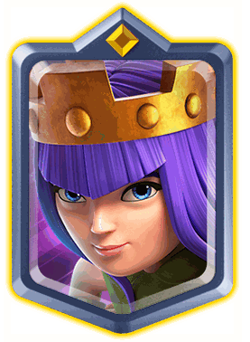
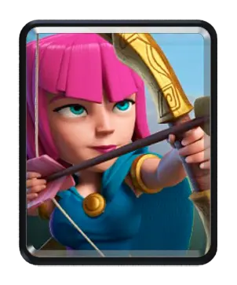

Header

Archer queen
De archer queen is een sterke Champion kaart. Ze is 5 elixer en heeft een skere ability. Hierdoor wordt ze voor 5 seconden onzichtbaar en kan ze gewoon nog troepen hitten. Ze heeft ook veel health.
Go somewhere
Witch
De witch is een goede Epicische kaart. Ze is 5 elixer en spawnt om de 6 seconden 4 skeletten in. Deze vallen voor haar aan en proberen haar te beschermen. Zelf richt ze van afstand ook schade aan.
Go somewhere

Archers
De archers zijn een sterke Common kaart. Ze zijn 3 elixer en hebben een goede range. Ze komen altijd in duo en hun damage is goed. Ze hebben genoeg health en zijn ook nuttig te gebruiken in cycle decks.
Go somewhere